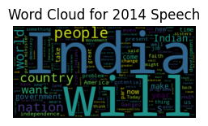

Applied LDA, LSA, and BERTopic topic modeling to two transcripts of speeches given nine years apart, to compare how NLP surfaces different themes and how much of that reflects genuine topic diversity vs sample size.
LDALSABERTopicNLPGensim
352 vs 231sentences, 2014 vs 2023
0.605 vs 0.616LDA coherence, 2014 vs 2023
2014 US Speech
Corpus of 352 sentences.
LDA (5 topics) achieved a coherence score of 0.605 (perplexity -7.80); dominant themes: cleanliness/land, indian people/jobs, gratitude, country/service, visa/dreams.
LSA scored a coherence of 0.408 — lower than LDA on this run.
BERTopic found only 2 meaningful topics (330 vs 22 documents) — too few sentences for it to separate more themes.
Conclusion in the notebook: LDA gave the most interpretable topics for this smaller corpus.

Word cloud — 2014 speech
2023 US Congress Address
Corpus of 231 sentences.
LDA coherence score 0.616 (perplexity -7.61); topics centered on partnership, democracy, world, and nation.
LSA scored a coherence of 0.547.
BERTopic identified 5 distinct topics plus outliers this time — richer separation than the 2014 run, including democracy, history/scripture, and technology/payments themes.